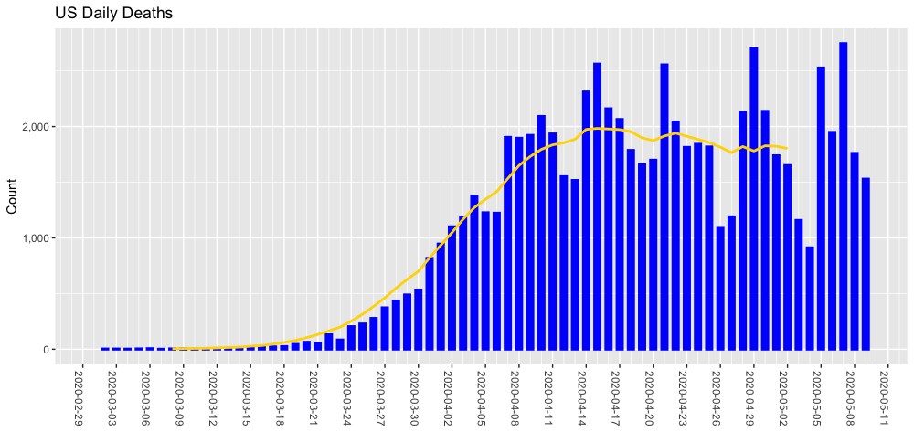
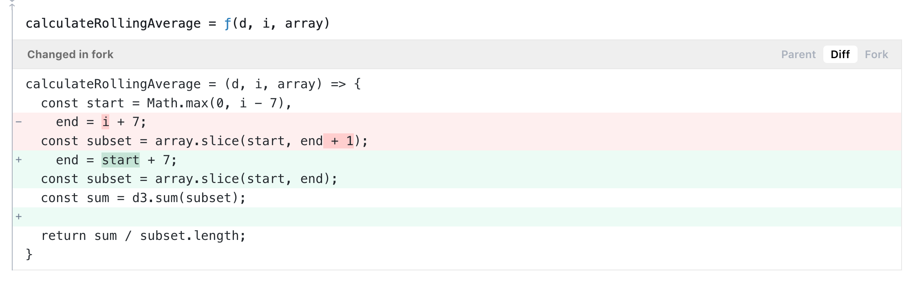
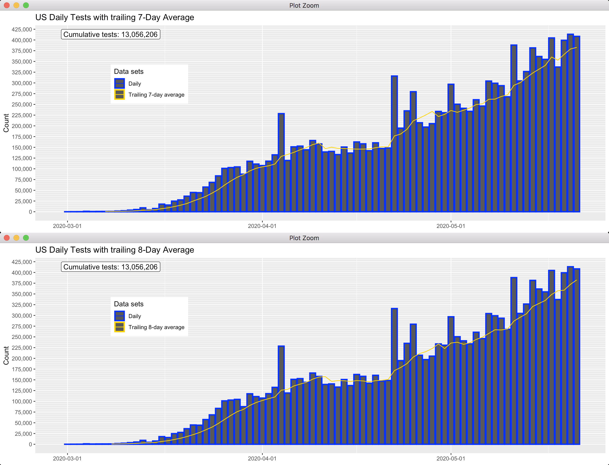
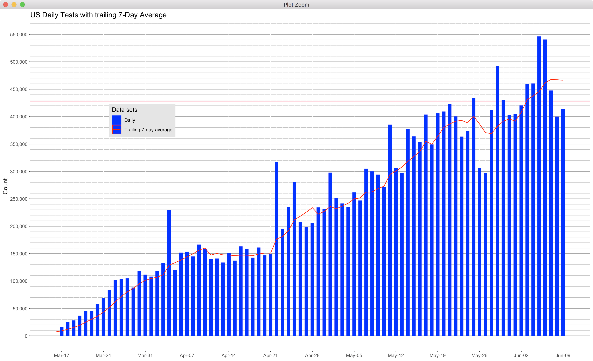

Twitter 7-day average line is incorrect
Issue number 399
Jmuccigr opened this issue on May 9, 2020 at 5:33 pm
All the bar charts on Twitter purport to show a “rolling 7-day average” line. I’m not quite sure how you’re taking that average, but it seems wrong.
For example, look at the deaths data from today (Saturday):

On the left it takes until Mar 31 for the line not to be above the bars, so the line must be averaging in data from later dates, but since it hits the bar on Mar 31, it must also be averaging in earlier dates, since the 7 days after that are all higher.
However, if I plot the average of a 7-day window centering it on the date in question, I don’t get your line. I think I get it if I plot a moving 15-day window, but yours still seems smoothed a bit more. So, I think what you’re really doing is plotting a rolling 15-day average, not 7. My version: 
PS I’d suggest a 7-day trailing average, so you always have complete data for each point on the line. Right now, you’re having to supply data somehow for each of the last 7 days of the line since there are no later dates to roll in.
R code for my plot, using your data as covid_usa:
df <- filter(covid_usa, date >= as.Date ("2020-03-01"))
ggplot(df) +
scale_color_manual(values = c("gold")) +
labs(title = "US Daily Deaths", x = NULL, y = "Count") +
theme(legend.position = "NONE" ) +
scale_x_date(breaks = "3 day", minor_breaks = "1 day", limits = c(as.Date("2020-03-01"), NA)) +
scale_y_continuous(labels = comma) +
theme(axis.text.x = element_text(angle = 270)) +
geom_col(aes(y = deathIncrease, x = date), size = 1, color = "blue", fill = "blue", width = .5) +
geom_line(aes(color = "Rolling 15-day average", x = date, y = rollapply(deathIncrease, 15, FUN = "mean", align = "center", fill = NA) ), size = 1 )
Comments
Thank you very much for your input @Jmuccigr. I have passed your suggestion and concern to the data presentation team. I’m going to close this for now but feel free to reopen if necessary.
@Jmuccigr Thanks for pointing this out, turns out you were mostly correct. We were not always showing a 7 day moving average, and it was more complicated than a simple line. Turns out I was using between 7 and 15 days (code below), depending on which index a given day had in the data set. I made updated the code so that now it only uses a 7 day slice.
Please reopen this issue. It’s wrong again. Note in the tests image from May 21 how the running average line rises on May 18, when that day is lower than the previous and the day 6 days earlier is lower than its previous day that should get moved out of the rolling average. https://twitter.com/COVID19Tracking/status/1263583359407620096
I’m not 100%, but looking at the code in the last comment, do you need to put 6 instead of 7? You’re doing an 8-day window if you go from (i -7) to i. That would be, for example, 1 to 8, not 1 to 7.
Here’s a comparison of 7 vs 8-day rolling windows in R (I copied your formatting a bit). Your method still smooths out the lines a bit more than ggplot does, but you can see how the 8-day matches yours, esp for that dip on May 18: 
Relevant bit of code in R (a bit simplified to remove some of the formatting stuff). Change the value of the “days” variable to modify the window. covid-usa is the raw data from the API:
df <- filter(covid_usa, date >= as.Date("2020-03-01"))
days <- 7 # change to adjust size of window
ggplot(df, aes(y = totalTestResultsIncrease, x = date, group = 1)) +
labs(title = paste("US Daily Tests with trailing ", days, "-Day Average", sep = ""), x = NULL, y = "Count", color = "Data sets") +
theme(legend.position = c(.2,.7) ) +
scale_color_manual(values = c("blue", "gold")) +
geom_col(size = 1, aes(color = "Daily")) +
geom_line(aes(color = paste("Trailing ", days, "-day average", sep = ""), y = rollapply(totalTestResultsIncrease, days, FUN = "mean", align = "left", fill = NA) ) )
Any thoughts?
@Jmuccigr Thanks for noting this, really appreciate the attention to detail. Here is the Observable notebook we are using to create those charts, you can see where we are calculating calculateRollingAverage.
When I audit the algorithm, it does look like we’re calculating the average using 7 values because of the way that .slice() works in Javascript (the end value isn’t included).
I feel like I’m missing your point regarding May 18th, can you try restating it?
Hi. I have no clue about .slice(), so feel free to ignore my attempt to diagnose the problem in your code.
Just compare my two examples from with the image from your tweet that I link to. In the 7-day example, the curve drops on May 18 as the bar is lower than the bar from 7 days previous that it replaces, so the 7-day average drops. In your curve it rises, which is incorrect. Maybe try calculating the average for that day by hand?
To my eye, the R version of an 8-day average that I posted looks a lot like your curve. Not identical, because I think your plotting software just prints a smoother curve for some reason. Note the absence of sharp changes in your curve.
Again, I would suggest just calculating one 7-day average by hand to see what you get.
EDIT
OK, here’s the math with my R code and its slightly modified output. I just cut the database down to the seven days ending with the 18th, then I print out the date and the test increase, followed by the mean of those numbers.
Note that the mean 7-day value on the 18th is a bit less than the actual value on the 16th. In your chart, the mean (rolling) value on the 18th is higher than the actual value on the 16th.
df <- filter(covid_usa, date >= "2020-05-12", date <= "2020-05-18"); paste(df$date,df$totalTestResultsIncrease); mean(df$totalTestResultsIncrease)
2020-05-18 345702
2020-05-17 402808
2020-05-16 352936
2020-05-15 362941
2020-05-14 376751
2020-05-13 296025
2020-05-12 304745
348844
Now let’s do the previous seven days (same R code, just move the window down one day). The May 17 rolling average is higher than the 18th, but that’s not what your chart shows:
2020-05-17 402808
2020-05-16 352936
2020-05-15 362941
2020-05-14 376751
2020-05-13 296025
2020-05-12 304745
2020-05-11 384644
354407.1
I think this is correct now, though the smoothing on the average curve is pretty heavy compared with what R does. 
Anything on this? I suspect it’s a quick fix, just changing a number in your code.